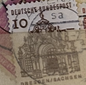
| SOURCE | TITLE| IMAGE MATCH | click to source page |
| eBay | West Germany - 1964 - Building Structures 12th Century, large size - 10Pfg | eBay | 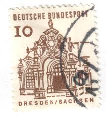 |
| eBay | BERLIN 9N215 (Mi242) - Architecture "Ellwangen Castle Gate" (pf3944) | eBay | 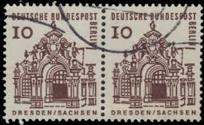 |
| HipStamp | Germany 10 Dresden Sachsen (3778-Т) | Europe - Germany & Colonies - Germany, General Issue Stamp / HipStamp |  |
| Colnect | Germany, Federal Republic : Stamps [Year: 1965] [1/13] : Colnect 📮 | 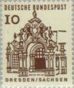 |
| eBay | BRD 454 I, 10 Pf PF I, Bauwerke 1964, waagrechtes Paar gestempelt #A756 | eBay | 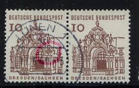 |
| HipStamp | Stamps Are Friends / HipStamp | 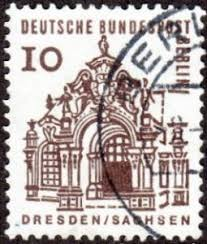 |
| HipStamp | Germany 1965 Sc#903 10pf Wall Pavillion Used | Europe - Germany & Colonies - Germany, General Issue Stamp / HipStamp | 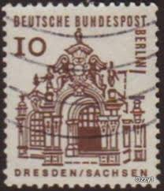 |
| eBay | 8 Number Postage European Stamps for sale | eBay | 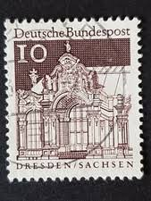 |
| HipStamp | Germany - Berlin 9N215-9N222 MNH | Europe - Germany & Colonies - Berlin, General Issue Stamp / HipStamp | 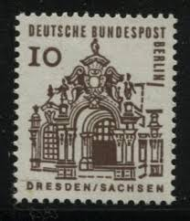 |
| Shutterstock | Gdr Circa 1965 Post Stamp Printed Stock Photo 1108030460 | Shutterstock |  |
| eBay | 0,10, Deutsche Bundespost, Dresden Sachsen, Briefmarke | eBay | 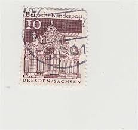 |
| Poppe Stamps | Poppe Stamps: West Berlin, 1964, B236, Castles, Anniversary - stamps for sale by theme and country | 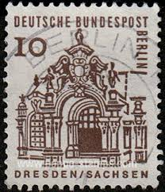 |
| Amazon.com | Amazon.com: Berlin (West) 242DZ with Printing Signs unmounted Mint/Never hinged ** MNH 1964 Structures (Stamps for Collectors) : Toys & Games | 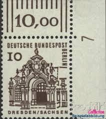 |
| Alamy | Postage stamp germany deutsche post 10 hi-res stock photography and images - Page 2 - Alamy | 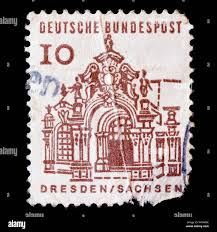 |
| Alamy | 1964 vintage hi-res stock photography and images - Page 33 - Alamy | 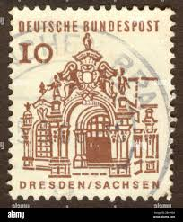 |
| iStock | Domed Church On A Mexican Stamp Stock Photo - Download Image Now - Mexico, Postage Stamp, Architectural Dome - iStock | 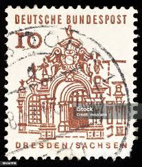 |
| HipStamp | Germany 937 - Used - 10pf Wall Pavilion (Dresden) (1967) | Europe - Germany & Colonies - Germany, General Issue Stamp / HipStamp | 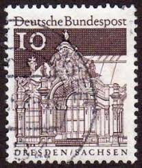 |
| Dreamstime.com | Wall of the Zwinger Palace. Russian Text Translation Editorial Stock Photo - Image of bombs, bomb: 174036878 | 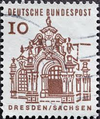 |
| eBay | Berlin 1964 Mi. Nr. 242 Gestempelt LUXUS!!! | eBay | 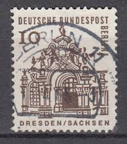 |
| Amazon.com | Amazon.com: FRD (FR.Alemania) 454wP Pareja horizontal sin montar menta/nunca abisagrada ** MNH 1964 Estructuras (sellos para coleccionistas) : Juguetes y Juegos | 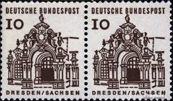 |
| eBay | Postkarte Berlin 921/29 27.12.1965 gel_63 | eBay | 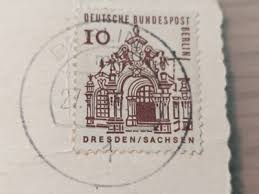 |
| eBay | Bund 454 I, O, 10 Pf.Bauwerke Pl.Fehler gebrochene Säule | eBay | 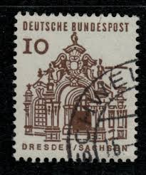 |
| Dreamstime.com | USA - Circa 1966 : a Postage Stamp Printed in the US Showing a Portrait of the Architect, Interior Designer, Writer and Art Dealer Editorial Stock Image - Image of building, head: 201326279 | 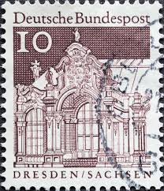 |
| Alamy | Germany flag postage stamp hi-res stock photography and images - Page 3 - Alamy | 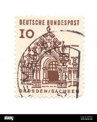 |
| Todocolección | sello - deutsches reich / deutsche bundespost - - Buy Antique stamps of Germany on todocoleccion | 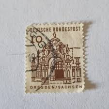 |
| ebid.net | N.G. Lee Seng Vintage Stoneware Studio Pottery Vase - Kuching, Sarawak on eBid United Kingdom | 176906417 | 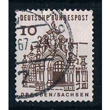 |
| eBay | GERMANY Mi. #454I scarce used stamp w/ plate flaw! #2 CV $72.00 | eBay | 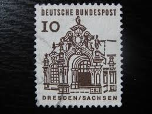 |
| Dreamstime.com | 02 09 2020 Divnoe Stavropol Territory Russia the Postage Stamp Germany 1964 German Building Structures of the 12th Century, Editorial Photography - Image of landmark, historic: 191598457 | 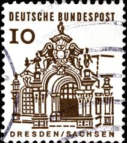 |
| eBay | BRD 1964 Mi. Nr. 454 Gestempelt LUXUS!!! | eBay | 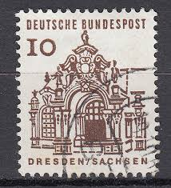 |
| Colnect | Germany, Federal Republic: Wallpavillon of the Zwinger, Dresden/Sachsen, 1967 : US$ 0.01 from arnisventa : Stamps Marketplace : Stamps for sale : Colnect | 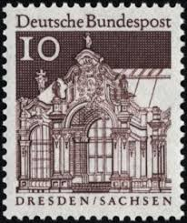 |
| Chapman University | Peace Communication (24 x 36 in) | 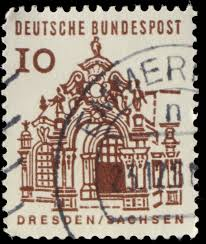 |
| Shutterstock | 31+ Thousand Germany Postage Stamp Royalty-Free Images, Stock Photos & Pictures | Shutterstock | 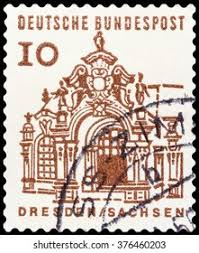 |
| eBay | GERMANY Mi. #454I scarce used stamp w/ plate flaw! CV $72.00 | eBay | 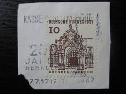 |
| Stampedia | stampedia GERMANY STAMP catalog | 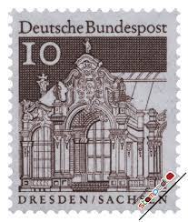 |
| Shutterstock | 17 Wall Pavillon Zwinger Dresden Royalty-Free Images, Stock Photos & Pictures | Shutterstock | 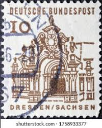 |
| Richter Stamps | Germany West Berlin – Richter Stamps | 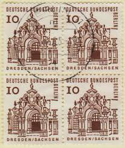 |
| eBay | Machine Cancel German & Colonies 1961-1970 Year of Issue Stamps for sale | eBay | 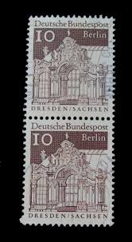 |
| eBay | 1965 Berlin 10 Pf Dresden Zwinger Mi 242 postfrisch | eBay | 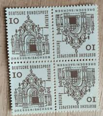 |
| HipStamp | Germany #937 10pf Wall Pavilion, Zewinger, Dresden used VF | Europe - Germany & Colonies - Germany, General Issue Stamp / HipStamp | 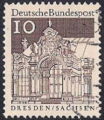 |
| Dreamstime.com | The Zwinger in Dresden, Germany Editorial Image - Image of gallery, glockenspiel: 90202110 | 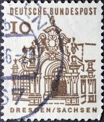 |
| Bob Shop | Looking for passat+b8 Buy online on Bob Shop. | 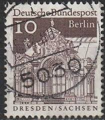 |
| Find Your Stamps Value | BERLIN - Wall Pavilion, Zwinger, Dresden 10pf Dark brown stamp price, value | 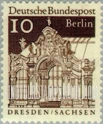 |
| eBay | West Germany - 1966 -1969 - Building Structures 12th Century - 10Pfg - Used | eBay | 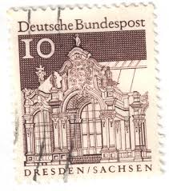 |
| eBay | Germany Berlin 1964 Sc# 9N215 Zwinger Dresden block 4 MNH | eBay | 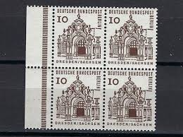 |
| Stamp Community Forum | Arches, Columns & Gates On Stamps - Page 4 - Stamp Community Forum | 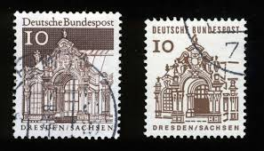 |
| Todocolección | sello alemán. deutsche bundespost 10 pf. dresde - Acheter Timbres anciens d'Allemagne sur todocoleccion | 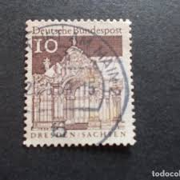 |
| Todocolección | carta mikroskip von huntley londo 1740 matasell - Buy Antique stamps of Germany on todocoleccion | 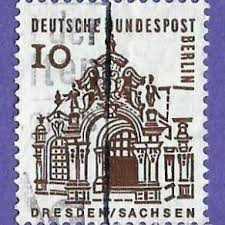 |
| Todocolección | aleman.5 / alemania imperio, usado, 2ª guerra m - Buy Antique stamps of Germany on todocoleccion | 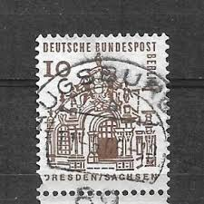 |
| Bob Shop | Bulklots and Thematic Collections - Stamps Thematic Architecture ULH for sale in Venterstad (ID:670904863) | 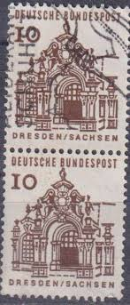 |
| Dreamstime.com | Vintage Illustrated Bookmarks in Frame Displaying Diverse 20th Century Designs Editorial Stock Image - Illustration of artistic, antique: 400170544 | 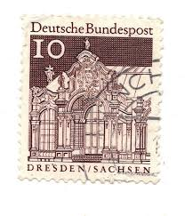 |
| Redbubble | Berlin, Germany Vintage Stamp collecction" Sticker for Sale by Add2crt | Redbubble | 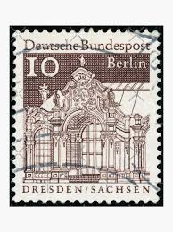 |
| Todocolección | sello - deutsches reich / deutsche bundespost - - Buy Antique stamps of Germany on todocoleccion | |
| iStock | Postage Stamp Switzerland 1960 Cathedral St Gallen Switzerlan Stock Photo - Download Image Now - iStock | |
| Alamy | Dresden stamp germany hi-res stock photography and images - Alamy | |
| eBay UK | BERLIN 9N215a - Ellwangen Castle Gate "Tete-Beche Pair" (pb29442) | eBay UK | |
| eBay | Germany 1967 10pf Wall Pavilion Zwinger Berlin Stamp | eBay | |
| Todocolección | alemania rf. 1980. usado. completa. - Buy Antique stamps of Germany on todocoleccion | |
| Shutterstock | 1,749 German Pfennig Royalty-Free Images, Stock Photos & Pictures | Shutterstock | |
| www.centraltech-ne.com.br | 1966 Berlin Germany postage stamp |